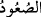
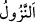
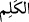
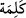
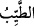
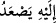
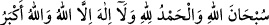

Hadis-i şerifte şöyle vârid olmuştur: “Rabbiniz her gün Aziz benim; kim dünya ve
âhirette izzet ve şeref isterse Aziz olana itâat etsin”[61] buyurur. Allah Teâlâ sonra
izzet ve şerefin ne ile talep ve tahsil edileceğini beyan etmiş ve şöyle buyurmuştur:
“O’na ancak güzel sözler yükselir (ulaşır).”
“__WORD__, yükseğe çıkmak, yükselmek demektir. Sonra mecâz olarak Allah’tan kula
ulaşana, inmek anlamında “__WORD__ tâbir edildiği gibi kuldan Allah’a ulaşana da “__WORD__
denilmiştir. “__WORD__ kelimesi cins isimdir. Bazılarının dediği gibi “__WORD__nin çoğulu
değildir. Bundan dolayı da müzekker olan “__WORD__ kelimesiyle nitelenmiştir. Cumhurun
görüşü de budur. Ancak “tayyib”in aslı havas ve duyu organlarının lezzet duyduğu
şeydir. Burada “güzel sözlerden” murad, îman ve tevhîd kelimesidir. Zira bunlar
güzellerin en güzelidir. Burada “__WORD__ ifâdesinde câr ile mecrûrun takdim edilmesi
güzel söze tam değer verildiğinden dolayıdır. Yâni kendisiyle izzet talep edilen güzel
sözler, işleri yalnız insanların amellerini yazmak olan meleklere değil, sadece Allah’a
ulaşır. Allah böyle güzel söz sâhibini azîz eder ve ona matlûbunu bizzat kendisi verir.
Bâzıları der ki buradaki güzel sözler ifâdesi duâya, istiğfâra, Kur’an okumaya ve :
“Allah’ı noksan sıfatlardan tenzih ederiz. Bütün hamdler Allah’a mahsustur.
Allah’tan başka ilah yoktur. Allah en büyüktür”[62] gibi zikirlere ve benzeri güzel
sözlere şâmildir.
Denilir ki güzel sözler Allah’a değil, onun semâsındaki kabul mahalline, makbul
amellerin yazıldığı makama yükselir. Allah Teâlâ şöyle buyuruyor: “Hayır! Andolsun
iyilerin kitabı İlliyyûn’dadır” (el-Mutaffifîn 83/18). Allah Teâlâ’nın İbrahim (a.s.)’dan
hikâye ederek “(Oradan kurtulan İbrahim:) Ben Rabbime gidiyorum. O bana doğru
yolu gösterecek” (es-Saffât 37/99), buyruğunun mânâsı “Rabbimin bana gitmemi
emrettiği Şam’a gidiyorum” demektir.
Zâhir olan mânâ şudur: Yazıcı melekler kişinin amel defterini Allah Teâlâ’nın
emrettiği yere yükseltirler. Yahut “güzel sözler kendileri o makama yükselir” veya Allah
Teâlâ bizzat kendisi güzel sözleri o makama yükseltir. Bazı büyükler der ki bâzı ameller
sidre-i müntehâda kalır. Bazıları cennete, bazıları arşa ulaşır; bazıları arşı geçip âlem-i
misâle ulaşır. Bazen âlem-i misâli geçip Levh’a ulaşır. Sonra Kalemle ilgili makama,
sonra Amâ makamına ulaşır. Bu durum amel sâhiplerinin sadâkat, ihlâs, tasavvur,
müşâhede ve ayân mertebelerinin farklılığına göre değişiklik arz eder.
Buna göre bazı ameller göğü ve bütün cisimler âlemini geçer ve artık onun kabul yeri
bütün bu anlatılanların üstünde olur. Buna göre amellerin yükselip ulaşacağı son
noktalar, amâ mertebesine ulaşıncaya kadar çok sayıda ve farklı mertebelerdir.
Allah Teâlâ’dan amellerin kabûlünü, gönlümüzün doğru ve sağlıklı olarak Allah’a
yönelmesini ve mânevî hâlimizin kuvvetlenmesini dileriz.